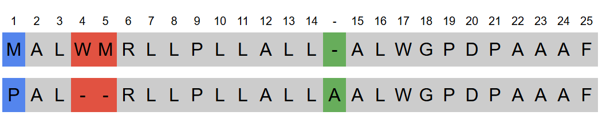

Jak to funguje
Nástroje
Protein Analyzer
Analyzuj proteinové sekvence, odhal mutace prozkoumej jejich souvislosti s lidskými chorobami.
1. Vyhledej referenční sekvenci proteinu, který chceš analyzovat
Protein Analyzer je propojen s UniProt, kvalitní veřejnou databází proteinových sekvencí. To zaručuje spolehlivý, odborně revidovaný a aktuální referenční data pro tvou analýzu.
2. Nahraj svou sekvenci
Jednoduše vlož či nahraj svou proteinovou sekvenci a porovnej ji s referenční. Ať už analyzuješ experimentální data, ověřuješ známé mutace nebo zkoumáš nové varianty, intuitivní prostředí ti umožní rychlé zadání sekvence.
3. Prozkoumej zarovnání a identifikuj mutace
Pomocí algoritmů pro zarovnání sekvencí porovná Protein Analyzer tebou zadanou sekvenci s referenční a najde rozdíly. Vizualizace ti pomůže pochopit, jak byly mutace identifikovány. Protein Analyzer automaticky detekuje substituce, delece a inzerce aminokyselin.
4. Zjisti, zda souvisejí s lidskými onemocněními
Tento nástroj interaguje s databází ClinVar, která obsahuje informace o genetických variantách a jejich spojitostech s nemocemi. Díky tomuto propojení poskytuje Protein Analyzer informace o tom, zda již byly dané mutace studovány, jejich případnou klinickou závažnost a souvislosti s genetickými chorobami či dědičnými syndromy.
5. Získej data pro další výzkum
Jedním kliknutím si exportuj výsledky své analýzy do různých formátů pro další výzkum. Ať už provádíš rozsáhlou studii nebo chcete jen sdílet své poznatky s kolegy, funkce stahování ti umožní plynule pokračovat ve svém výzkumu dál.
Vyzkoušej Protein AnalyzerAdvanced Sequence Aligner
Chceš pochopit, jak funguje porovnávání sekvencí, nebo si upravit parametry zarovnání? Advanced Sequence Aligner ti umožní zadat sekvence a efektivně je zarovnat s využitím třídy Pairwise Sequence Alignment z knihovny Biopython. Ať už pracuješ s DNA, RNA nebo sekvencemi proteinů, tento nástroj ti pomůže najít rozdíly mezi sekvencemi.
1. Uprav parametry zarovnání
Přizpůsob hodnoty skóre a penalizací podle svých potřeb.
2. Prohlédni si výsledky zarovnání
Zobrazení zarovnaných sekvencí přehledném formátu ti usnadní rozpoznat mutace.
3. Pochop jak zarovnání funguje
Upravuj parametry a sleduj, jak se zarovnání mění – pochopíš tak základy porovnávání biologických sekvencí.
Ideální nástroj zejména pro vědce a studenty, který nabízí flexibilní způsob, jak zkoumat vztahy mezi sekvencemi s plnou kontrolou nad procesem zarovnání.
Vyzkoušej Advanced AlignerKontakt
Pokud máte jakékoliv dotazy, nápady či zpětnou vazbu k aplikaci, neváhejte se ozvat. Uvítám jakýkoli komentář, který pomůže vylepšit GenAnalyzer.
Můžete mě kontaktovat e-mailem (genanalyzer24@gmail.com) nebo prostřednictvím GitHub Discussions.
GenAnalyzer je open-source projekt dostupný na GitHubu. Prohlédněte si zdrojový kód, přispějte nebo navrhněte vylepšení: GitHub - GenAnalyzer.